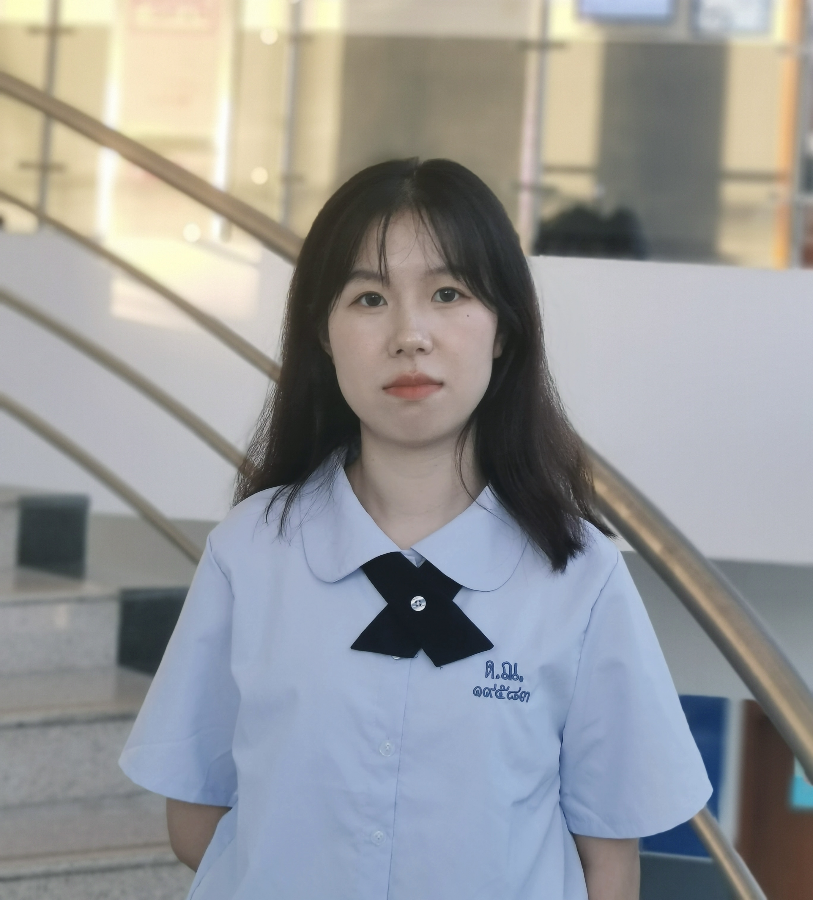
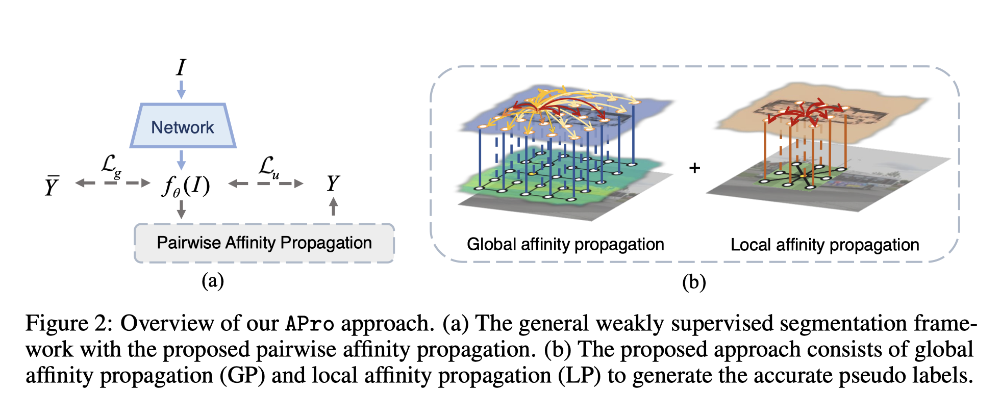
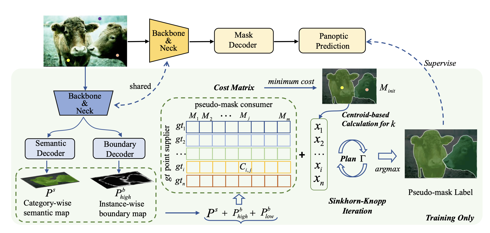

Yuqian Yuan 袁瑜谦Master StudentZhejiang University Email: yuanyuqian@zju.edu.cn
|
 |
About me
I am currently a second-year (2022-now) Master student in Zhejiang University, advised by Prof. Jianke Zhu. I received bachelor's degree in Computer Science and Technology in Nanjing University of Aeronautics and Astronautics(NUAA) in 2018. My research interests are in the field of computer vision, especially on the techniques for object detection, instance segmentation and panoptic segmentaion under minimal human supervision, including label-efficient, weakly/un-supervised and open-set learning.
Publications

Label-efficient Segmentation via Affinity Propagation
NeurIPS, 2023
[paper] [code] [project page]

Point2Mask: Point-supervised Panoptic Segmentation via Optimal Transport
ICCV, 2023
Honors
- National Scholarship, 2021
- Silver Medal, China Collegiate Programming Contest for Girls, 2021, 2020
- Honorable Mention, The 45th ICPC Asia Regional Contest, 2021
- Best Girl's Team, Jiangsu Collegiate Programming Contest, 2021
- The 17th place, China Collegiate Programming Contest for Girls, 2020
- Second Prize, The 11th "Blue Bridge Cup" National Software Competition Final, 2020
| © Yuqian Yuan | Last update: Sept 2023 |